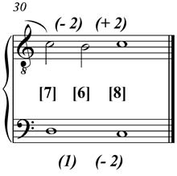

| Feature Explanations: N-gram Sequences |
GENERAL NOTES
The features belonging to the jSymbolic feature groups described in other parts of this manual largely focus on descriptors of musical content that are globally aggregated across the music from which features are being extracted, in a way that (in most cases) ignores the particular sequence that musical events occur. For example, the melody and melodic interval features mostly look at melodic transitions from one note to the next without regard to where and in what sequence these transitions occur relative to one another. This is not at all a bad thing, as such global features can be very helpful in capturing meaningful and important summary information about music; in a sense, it allows us to see the forest rather than focusing on the trees. Of course, it can also obviously be important focus on the trees as well, by also extracting features that capture more local information that encapsulates sequence. However, even features of this latter type still need to ultimately be representable as simple and consistently formulated single values or vectors of related values that describe the music in an aggregated way, as this is the nature of features. N-grams provide a convenient, meaningful and consistent way of capturing information about local sequences of musical events; features summarizing this information can then be calculated from n-grams.
In order to understand what an n-gram is, it is first necessary to understand the concept of a note onset slice, which provides a necessary mechanism for calculating n-grams. A note onset slice can defined as a vertical group of pitches sounding simultaneously, where a new slice is created whenever a new note attack occurs. Figure 1 demonstrates how slices are divided. In the case of jSymbolic note onset slices, unpitched (MIDI Channel 10) notes are ignored in the calculation of note onset slices and all the n-grams calculated from them.

Figure 1: Non-metrical example of how note onset slices (indicated by broken vertical lines) are segmented.
Most note onset slice implementations, including those used in jSymbolic n-gram calculations (unless otherwise noted in individual cases), include not only pitches that coincide with the start of the slice, but also notes sustained from previous slices. So, in the example shown in Figure 1, the tied E4 in the upper voice would be found in both the slice it begins in and the two slices following it (since it is sustained in these slices). These three slices would thus be: [A3,E4], [F3,E4] and [G3,E4]. Note that the A3 in this first slice is sustained from the previous slice, and the G3 in this third slice would also be included in the two slices following it.
Note onset slices can be extracted across all voices, as in the example above, but they can also be extracted separately for individual musical parts/voices. A part-segmented approach can be useful for capturing certain kinds of melodic or rhythmic information, while an approach considering all parts combined can be best for capturing certain kinds of harmonic information. It should also be noted that individual parts can themselves each contain more than one simultaneous note (e.g. guitar or piano parts), so it can also sometimes be useful to only consider onsets corresponding to the highest (or lowest, depending on the analytical purpose) pitch sounding in a given part, while other times it is better to consider all pitches for the part. In order to increase flexibility and the variety of n-grams and features that can be used, jSymbolic permits music to be broken into multiple different kinds of note onset slices. Please see the jSymbolic code and its documentation for more details.
An interesting property of note onset slices, or at least their most common
varieties, is that they are not weighted by duration. So for example, a slice
holding three complete whole notes is treated identically during analysis to
a slice holding three complete half notes. In effect, note duration is only
relevant in determining whether a given note is found in multiple slices or
just the one it starts in. This can be a desirable property for many of the
features described below. However, in some cases it may be preferable to filter
out notes whose duration is too short, such as in cases where one does not want
brief decorative notes to influence harmonic transitions encoded in note onset
slices. It is therefore possible, if one wishes, to use note onset slice variants
that filter out notes with rhythmic values shorter than some given threshold
(e.g. smaller than an eighth note) if this would be desirable for calculating
a given type of feature. This is not, however, the default option under jSymbolic;
we have taken the position that it is generally better to include all pitched
notes in note onset slices, as the choice of filtering threshold can be arbitrary,
and even decorations can potentially be meaningful for certain kinds of features.
It is certainly possible to design future features based on note onset slices
that do in fact filter out very short notes, however.
In the case of music encoded as MIDI, notes that should in theory be encoded
as having simultaneous onsets may in fact include slight time offsets between
their attacks, either due to non-simultaneous onsets during a transcribed human
MIDI performance or due to encodings by score editing software intended to make
the music sound more performance-realistic when synthesized. It is therefore
necessary to time-quantize both note onsets and offsets, in order to make sure
that theoretically simultaneous note attacks do not result in two different
slices and to ensure that notes are not accidentally sustained to subsequent
slices in which they should in theory no longer be sounding, respectively. This
is exactly what jSymbolic does: when it encounters a new note onset, it jumps
to the next idealized sub-beat that corresponds to a 32nd note division (if
it is not already at one), and performs a look-behind and a look-ahead, each
with an idealized 32nd note's duration. All notes whose onsets fall in this
range are added to the note onset slice that is created for the original note
onset at the idealized 32nd note sub-beat. The consequence of this is that a
new note onset is automatically grouped into the same note onset slice of all
other new notes whose onsets fall within a 32nd note's range of it. It should
be noted that this 32nd note threshold was chosen as a compromoise based on
empirical analysis of MIDI files found on-line, and cannot by universably applicable;
MIDI files can still potentially be encoded through live performance with rhythmic
looseness effectively beyond this threshold, leading to notes that are annotated
on the score as being simultaneous ultimately being placed in two different
note onset slices.
Now that we have defined note onset slices, an n-gram can
be understood as information extracted from a contiguous sequence of either
n or n+1 note onset slices, such that the n-gram encodes n
musical events or transitions in this sequence. An n-gram will require n
slices if it encodes events, and n+1 slices if it encodes transitions.
One can imagine a wide variety of meaningful sequences that n-grams can be used
to encode.

Figure 2: Example of a vertical 3-gram and two horizontal/melodic 2-grams, where in this case indicated intervals are diatonic (unlike the typical jSymbolic case, where intervals are represented as semitone counts).
Figure 2 illustrates how n-grams of different types can be calculated. We can begin by noting that this musical example consists of three note onset slices: [D3,C4], [D3,B3] and [C3,C4]. From this, we can construct an n-gram consisting of the diatonic vertical intervals between the pitches in each slice: [7,6,8]. This type of n-gram is called a 3-gram, since it consists of three pieces of information (i.e. n=3). In practice jSymbolic intervals are usually expressed as semitone counts rather than as diatonic intervals, so this vertical 3-gram could alternatively be expressed using this encoding format as [10,9,12].
One could also extract two melodic 2-grams from the example in Figure 2, one
for the upper part and one for the lower part, respectively: [-2,2] and [1,-2].
In this case, diatonic melodic intervals are used in the encoding, with a negative
number indicating a descending interval. Note that the "1" in the lower
part 2-gram is used to indicate no melodic transition, since the D3 is held
in the second note onset slice. In practice, jSymbolic would also encode these
two melodic 2-grams as semitone counts, as follows: [-1,1] and [0,-2], for the
upper and lower parts respectively (the 0 in the lower voice melodic 2-gram
is now used to represent the held D3, since there is a transition of 0 semitones).
One could even combine these vertical 3-grams and melodic 2-grams into a single contrapuntal 3-gram encapsulating all this information (diatonically, in this encoding): [7(1,-2),6(-2 2),8]. This type of n-gram is not currently used by any jSymbolic features, but could serve as the basis for the development of future features.
Although n-grams of these types and others (e.g. rhythmic value n-grams, as described below) can encapsulate a wide variety of different kinds of musically meaningful information, it is difficult to use n-grams directly as features, partly because some contain entries of variable size (such as vertical n-grams), partly because there can be a huge variety of different n-grams for any given piece and partly because there can also be substantial n-gram differences between different pieces. However, n-grams for a piece of music can be aggregated together into histograms and other intermediate data structures, which can in turn serve as the basis for calculating features that themselves in effect capture information about sequences of musical events. Aggregating
n-grams in this way allows one to observe patterns in the music and quantify how frequently
different patterns occur, for example.
jSymbolic does exactly this: it calculates n-grams from individual overlapping sliding windows of note onset slices, and then combines the resulting n-grams to generate histograms and other intermediate representations, from which features can be calculated. The jSymbolic features derived from n-grams can be divided into three types, each of which is catalogued below:
Different types of note onset slices and associated n-grams are used for calculating different types of features. More details are provided in each of the sections below.
It should be noted that jSymbolic includes implemented functionality for calculating a variety of note onset slices and n-gram types beyond just those described here. This is intended to facilitate the development of future features that may be based on them; although this code is not currently set to be executed by default (in order to save processing time), it can easily be accessed by those wishing to extend the jSymbolic feature catalogue. Please see the jSymbolic code and its documentation for more details on the complete catalogue of note onset slices and n-grams that can be extracted by jSymbolic.
jSymbolic also allows arbitrary values of n to be used when calculating n-grams, and also allows n-grams of potentially different sizes to be used in new features if desired. The implemented jSymbolic n-gram feature catalogue has generally focused on features where n=3, however, since they seem to produce the most useful information: 2-grams capture sequences that are too limited in length to be as musically meaningful as 3-grams, and n-grams with n>3 tend to produce so many different permutations that it can be difficult to extract practically usable feature information from them. 3-grams also seem to nicely correspond to certain musically important types of events, such as simple cadential patterns. That being said, future development could certainly be performed that utilizes larger n-grams of particular interest.
As a final note, it should be re-emphasized that MIDI Channel 10 unpitched percussion notes are excluded from all jSymbolic note onset slices and n-grams including, of course, those described in the following sections.
JSYMBOLIC FEATURE CATALOGUE (MELODIC INTERVAL N-GRAMS SECTION)
A melodic interval n-gram consists of a set of n values, where each value
specifies the interval of a melodic transition in a musical line, and can be expressed as a count of semitones (with 0 indicating a melodic unison), or as a generic interval value. Each melodic
interval n-gram corresponds to n+1 sequential note onset slices. Melodic n-grams (and
their associated note onset slices) are first calculated independently for each musical
part/voice (i.e. for each MIDI track/channel pairing), and the resulting n-grams are
then all aggregated together into one collection for all lines just before features are calculated. If there are multiple notes in
a given note onset slice for a given line, then only the highest pitch in the
line's slice is included in the calculation of the melodic interval n-gram. Pitches still held in a given note onset slice from a previous slice
are included in the set of candidate pitches in the new note
onset slice, and new note onset
slices are only considered to occur in the calculation of this particular type of n-gram if new notes in
a line's slice are higher in pitch than any still-sounding notes from one of the line's previous
slices. Melodic n-grams are calculated using sequential sliding windows, with one
n-gram for each note onset slice that has n note onset slices following
it.
- NM-1 Most Common Melodic Interval 3-gram Type: A feature vector of size 3 consisting
of the melodic interval 3-gram that occurs the
most frequently in the music. Each of the 3 component values of the 3-gram specifies
a melodic interval in number of semitones,
appearing in the order it occurs (e.g. the first value is the first melodic
interval in the 3-gram). Only pitched notes are included in these 3-grams. Set to [0,0,0] if there
are no melodic interval 3-grams in the music (e.g. music with only MIDI Channel 10 unpitched notes).
- NM-2 Second Most Common Melodic Interval 3-gram Type: A feature vector of size 3 consisting
of the melodic interval 3-gram that occurs the
second most frequently in the music. Each of the 3 component values of the 3-gram specifies
a melodic interval in number of semitones,
appearing in the order it occurs (e.g. the first value is the first melodic
interval in the 3-gram). Only pitched notes are included in these 3-grams. Set to [0,0,0] if there
are no melodic interval 3-grams in the music (e.g. music with only MIDI Channel 10 unpitched notes).
- NM-3 Prevalence of Most Common Melodic Interval 3-gram Type: Fraction of all melodic interval 3-grams that correspond to the most common
melodic interval 3-gram type. Set to 0 if there are
no melodic interval 3-grams in the music (e.g. music with only MIDI Channel 10 unpitched notes).
- NM-4 Prevalence of Second Most Common Melodic Interval 3-gram Type: Fraction of all
melodic interval 3-grams that correspond to the
second most common melodic interval 3-gram type. Set
to 0 if there are no melodic interval 3-grams in the music (e.g. music with only MIDI Channel 10 unpitched notes).
- NM-5 Prevalence of Median Melodic Interval 3-gram Type: Fraction of all
melodic interval 3-grams that correspond to the
melodic interval 3-gram type with the median prevalence. Set
to 0 if there are no melodic interval 3-grams in the music (e.g. music with only MIDI Channel 10 unpitched notes).
- NM-6 Number of Distinct Melodic Interval 3-gram Types: The number of unique
melodic interval 3-gram types that exist in the
music. This value is unrelated to the frequency with which each of these 3-grams types occur in the music.
- NM-7 Number of Rare Melodic Interval 3-gram Types: The number of different melodic interval 3-gram types that each account individually
for 3% or less of all melodic interval 3-grams that occur in the music.
- NM-8 Number of Common Melodic Interval 3-gram Types: The number of different melodic interval 3-gram types that each account individually
for at least 9% of all melodic interval 3-grams that occur in the music.
- NM-9 Number of Very Common Melodic Interval 3-gram Types: The number of vertical
interval 3-gram types that each account individually for at least 15% of all vertical
interval 3-grams that occur in the music.
- NM-10 Prevalence of Melodic Interval 3-gram Types Occurring Only Once: The
number of melodic interval 3-gram types that occur once and only once in the music, divided by the total number of unique melodic interval 3-gram types that exist in the
music. Set
to 0 if there are no melodic interval 3-grams in the music (e.g. music with only MIDI Channel 10 unpitched notes).
- NM-11 Prevalence of Rare Melodic Interval 3-gram Types: The number of different melodic interval 3-gram types that each account individually
for 3% or less of all melodic interval 3-grams that occur in the music, divided by the total number of unique melodic interval 3-gram types that exist in the
music. Set
to 0 if there are no melodic interval 3-grams in the music (e.g. music with only MIDI Channel 10 unpitched notes).
- NM-12 Prevalence of Common Melodic Interval 3-gram Types: The number of different melodic interval 3-gram types that each account individually
for 9% or more of all melodic interval 3-grams that occur in the music, divided by the total number of unique melodic interval 3-gram types that exist in the
music. Set
to 0 if there are no melodic interval 3-grams in the music (e.g. music with only MIDI Channel 10 unpitched notes).
- NM-13 Prevalence of Very Common Melodic Interval 3-gram Types: The number of different melodic interval 3-gram types that each account individually
for 15% or more of all melodic interval 3-grams that occur in the music, divided by the total number of unique melodic interval 3-gram types that exist in the
music. Set
to 0 if there are no melodic interval 3-grams in the music (e.g. music with only MIDI Channel 10 unpitched notes).
- NM-14 Most Common Melodic Interval 3-gram Type in Highest Line: A feature vector of size 3 consisting
of the melodic interval 3-gram that occurs the
most frequently in the MIDI track and channel pairing with the highest average pitch in the music. Each of the 3 component values of the 3-gram specifies
a melodic interval in number of semitones,
appearing in the order it occurs (e.g. the first value is the first melodic
interval in the 3-gram). Only pitched notes are included in these 3-grams. Set to [0,0,0] if there
are no melodic interval 3-grams in the music (e.g. music with only MIDI Channel 10 unpitched notes).
- NM-15 Second Most Common Melodic Interval 3-gram Type in Highest Line: A feature vector of size 3 consisting
of the melodic interval 3-gram that occurs the
second most frequently in the MIDI track and channel pairing with the highest average pitch in the music. Each of the 3 component values of the 3-gram specifies
a melodic interval in number of semitones,
appearing in the order it occurs (e.g. the first value is the first melodic
interval in the 3-gram). Only pitched notes are included in these 3-grams. Set to [0,0,0] if there
are no melodic interval 3-grams in the music (e.g. music with only MIDI Channel 10 unpitched notes).
- NM-16 Prevalence of Most Common Melodic Interval 3-gram Type in Highest Line: Fraction of all melodic interval 3-grams that correspond to the most common
melodic interval 3-gram type in the MIDI track and channel pairing with the highest average pitch in the music. Set to 0 if there are
no melodic interval 3-grams in this line (e.g. music with only MIDI Channel 10 unpitched notes).
- NM-17 Prevalence of Second Most Common Melodic Interval 3-gram Type in Highest Line: Fraction of all
melodic interval 3-grams that correspond to the
second most common melodic interval 3-gram type in the MIDI track and channel pairing with the highest average pitch in the music. Set
to 0 if there are no melodic interval 3-grams in this line (e.g. music with only MIDI Channel 10 unpitched notes).
- NM-18 Prevalence of Median Melodic Interval 3-gram Type in Highest Line: Fraction of all
melodic interval 3-grams that correspond to the
melodic interval 3-gram type with the median prevalence in the MIDI track and channel pairing with the highest average pitch in the music. Set
to 0 if there are no melodic interval 3-grams in the music (e.g. music with only MIDI Channel 10 unpitched notes).
- NM-19 Number of Distinct Melodic Interval 3-gram Types in Highest Line: The number of unique
melodic interval 3-gram types that exist in the MIDI track and channel pairing with the highest average pitch in the music. This value is unrelated to the frequency with which each of these 3-grams types occur.
- NM-20 Number of Rare Melodic Interval 3-gram Types in Highest Line: The number of different melodic interval 3-gram types that each account individually
for 3% or less of all melodic interval 3-grams that occur in the MIDI track and channel pairing with the highest average pitch in the music.
- NM-21 Number of Common Melodic Interval 3-gram Types in Highest Line: The number of different melodic interval 3-gram types that each account individually
for at least 9% of all melodic interval 3-grams that occur in the MIDI track and channel pairing with the highest average pitch in the music.
- NM-22 Number of Very Common Melodic Interval 3-gram Types in Highest Line: The number of vertical
interval 3-gram types that each account individually for at least 15% of all vertical
interval 3-grams that occur in the MIDI track and channel pairing with the highest average pitch in the music.
- NM-23 Prevalence of Melodic Interval 3-gram Types Occurring Only Once in Highest Line: The
number of melodic interval 3-gram types that occur once and only once in the MIDI track and channel pairing with the highest average pitch in the music, divided by the total number of unique melodic interval 3-gram types that exist in this line. Set
to 0 if there are no melodic interval 3-grams in this line (e.g. music with only MIDI Channel 10 unpitched notes).
- NM-24 Prevalence of Rare Melodic Interval 3-gram Types in Highest Line: The number of different melodic interval 3-gram types that each account individually
for 3% or less of all melodic interval 3-grams that occur in the MIDI track and channel pairing with the highest average pitch in the music, divided by the total number of unique melodic interval 3-gram types that exist in this line. Set
to 0 if there are no melodic interval 3-grams in this line (e.g. music with only MIDI Channel 10 unpitched notes).
- NM-25 Prevalence of Common Melodic Interval 3-gram Types in Highest Line: The number of different melodic interval 3-gram types that each account individually
for 9% or more of all melodic interval 3-grams that occur in the MIDI track and channel pairing with the highest average pitch in the music, divided by the total number of unique melodic interval 3-gram types that exist in this line. Set
to 0 if there are no melodic interval 3-grams in this line (e.g. music with only MIDI Channel 10 unpitched notes).
- NM-26 Prevalence of Very Common Melodic Interval 3-gram Types in Highest Line: The number of different melodic interval 3-gram types that each account individually
for 15% or more of all melodic interval 3-grams that occur in the MIDI track and channel pairing with the highest average pitch in the music, divided by the total number of unique melodic interval 3-gram types that exist in this line. Set
to 0 if there are no melodic interval 3-grams in this line (e.g. music with only MIDI Channel 10 unpitched notes).
- NM-27 Most Common Melodic Interval 3-gram Type in Lowest Line: A feature vector of size 3 consisting
of the melodic interval 3-gram that occurs the
most frequently in the MIDI track and channel pairing with the lowest average pitch in the music. Each of the 3 component values of the 3-gram specifies
a melodic interval in number of semitones,
appearing in the order it occurs (e.g. the first value is the first melodic
interval in the 3-gram). Only pitched notes are included in these 3-grams. Set to [0,0,0] if there
are no melodic interval 3-grams in the music (e.g. music with only MIDI Channel 10 unpitched notes).
- NM-28 Second Most Common Melodic Interval 3-gram Type in Lowest Line: A feature vector of size 3 consisting
of the melodic interval 3-gram that occurs the
second most frequently in the MIDI track and channel pairing with the lowest average pitch in the music. Each of the 3 component values of the 3-gram specifies
a melodic interval in number of semitones,
appearing in the order it occurs (e.g. the first value is the first melodic
interval in the 3-gram). Only pitched notes are included in these 3-grams. Set to [0,0,0] if there
are no melodic interval 3-grams in the music (e.g. music with only MIDI Channel 10 unpitched notes).
- NM-29 Prevalence of Most Common Melodic Interval 3-gram Type in Lowest Line: Fraction of all melodic interval 3-grams that correspond to the most common
melodic interval 3-gram type in the MIDI track and channel pairing with the lowest average pitch in the music. Set to 0 if there are
no melodic interval 3-grams in this line (e.g. music with only MIDI Channel 10 unpitched notes).
- NM-30 Prevalence of Second Most Common Melodic Interval 3-gram Type in Lowest Line: Fraction of all
melodic interval 3-grams that correspond to the
second most common melodic interval 3-gram type in the MIDI track and channel pairing with the lowest average pitch in the music. Set
to 0 if there are no melodic interval 3-grams in this line (e.g. music with only MIDI Channel 10 unpitched notes).
- NM-31 Prevalence of Median Melodic Interval 3-gram Type in Lowest Line: Fraction of all
melodic interval 3-grams that correspond to the
melodic interval 3-gram type with the median prevalence in the MIDI track and channel pairing with the lowest average pitch in the music. Set
to 0 if there are no melodic interval 3-grams in the music (e.g. music with only MIDI Channel 10 unpitched notes).
- NM-32 Number of Distinct Melodic Interval 3-gram Types in Lowest Line: The number of unique
melodic interval 3-gram types that exist in the MIDI track and channel pairing with the lowest average pitch in the music. This value is unrelated to the frequency with which each of these 3-grams types occur.
- NM-33 Number of Rare Melodic Interval 3-gram Types in Lowest Line: The number of different melodic interval 3-gram types that each account individually
for 3% or less of all melodic interval 3-grams that occur in the MIDI track and channel pairing with the lowest average pitch in the music.
- NM-34 Number of Common Melodic Interval 3-gram Types in Lowest Line: The number of different melodic interval 3-gram types that each account individually
for at least 9% of all melodic interval 3-grams that occur in the MIDI track and channel pairing with the lowest average pitch in the music.
- NM-35 Number of Very Common Melodic Interval 3-gram Types in Lowest Line: The number of vertical
interval 3-gram types that each account individually for at least 15% of all vertical
interval 3-grams that occur in the MIDI track and channel pairing with the lowest average pitch in the music.
- NM-36 Prevalence of Melodic Interval 3-gram Types Occurring Only Once in Lowest Line: The
number of melodic interval 3-gram types that occur once and only once in the MIDI track and channel pairing with the lowest average pitch in the music, divided by the total number of unique melodic interval 3-gram types that exist in this line. Set
to 0 if there are no melodic interval 3-grams in this line (e.g. music with only MIDI Channel 10 unpitched notes).
- NM-37 Prevalence of Rare Melodic Interval 3-gram Types in Lowest Line: The number of different melodic interval 3-gram types that each account individually
for 3% or less of all melodic interval 3-grams that occur in the MIDI track and channel pairing with the lowest average pitch in the music, divided by the total number of unique melodic interval 3-gram types that exist in this line. Set
to 0 if there are no melodic interval 3-grams in this line (e.g. music with only MIDI Channel 10 unpitched notes).
- NM-38 Prevalence of Common Melodic Interval 3-gram Types in Lowest Line: The number of different melodic interval 3-gram types that each account individually
for 9% or more of all melodic interval 3-grams that occur in the MIDI track and channel pairing with the lowest average pitch in the music, divided by the total number of unique melodic interval 3-gram types that exist in this line. Set
to 0 if there are no melodic interval 3-grams in this line (e.g. music with only MIDI Channel 10 unpitched notes).
- NM-39 Prevalence of Very Common Melodic Interval 3-gram Types in Lowest Line: The number of different melodic interval 3-gram types that each account individually
for 15% or more of all melodic interval 3-grams that occur in the MIDI track and channel pairing with the lowest average pitch in the music, divided by the total number of unique melodic interval 3-gram types that exist in this line. Set
to 0 if there are no melodic interval 3-grams in this line (e.g. music with only MIDI Channel 10 unpitched notes).
JSYMBOLIC FEATURE CATALOGUE (VERTICAL INTERVAL N-GRAMS SECTION)
The features in this section are based on two different types of vertical interval n-grams. Both types of vertical interval n-grams are calculated in sequential sliding windows, with one
n-gram for each note note onset slice that has n-1 note onset slices
following it.
A complete vertical interval n-gram consists of a set of n
lists, with one list for each of n qualifying sequential note
onset slices, and where each list specifies the vertical intervals between the
lowest pitch in the slice and every other unique pitch in the slice (a unison is specified if the lowest pitch is doubled). The vertical intervals
indicated by the entries for each list can be expressed in number of semitones, or by generic interval value.
The size of each of these lists can vary, depending on the number of unique vertical intervals found in
each list's corresponding note onset slice. The ordering of each list is such
that the first number indicates the interval between the lowest pitch and the
second lowest pitch, the second number indicates the interval between the lowest
pitch and the third lowest pitch, etc. If the lowest note in the slice is doubled, then the first number will indicate a unison, and the list continues as described. Note onset slices with no vertical intervals
(i.e. where only one note is sounding in the slice) are omitted from vertical
interval n-grams. So, for example, the four consecutive note onset slices [C4,E4,G4,C5],
[C4], [C4,C4,E4,G4,G4] and [C4,C4] would result in the following complete vertical interval
3-gram: [(4,7,12),(0,4,7),(0)]. Note how the second note onset slice was ignored
because it did not contain any vertical intervals. In the third note onset slice, the lowest note C4 is doubled, so the second list begins with the unison vertical interval (0). The note G4 is also doubled in this slice, but the second list has only one entry (7) for the vertical interval between the lowest note and the note G4. Vertical intervals are calculated
for all pitched (non-MIDI Channel 10) notes in all MIDI track/channel pairings,
and neither inclusion nor ordering is influenced by the MIDI track/channel a
given pitch is in. Pitches still held in a given note onset slice from a previous
slice are included in the list of pitches in the new note onset slice.
Some of the vertical interval features described below focus exclusively on
the vertical intervals between the lowest and the highest lines in the music being considered. Such features are calculated using lowest and highest lines vertical interval n-grams. This kind of n-gram only considers notes in the lowest and highest lines in the piece, which is to say the two MIDI track/channel pairings with the lowest and highest average pitches, respectively, as calculated across the entire piece of music from which features are being extracted. Notes in all other MIDI track/channel pairings are ignored in lowest and highest lines vertical interval n-grams and the note onset slices they are derived from. This means that only note onset slices that involve
a new note in one of these two outer parts are considered; note onset slices
corresponding to only new notes in inner lines are ignored.
If there are multiple
notes sounding in a given note onset slice for either of the lowest or highest lines, then only
the lowest or highest note is considered, respectively, in the calculation of lowest and highest lines vertical interval n-grams.
So, lowest and highest lines vertical n-grams each consists of a set of n
numbers, with one number for each of n qualifying sequential note
onset slices, and where each number specifies the vertical interval between
the lowest sounding pitch in the (overall) lowest line and the highest sounding
pitch in the (overall) highest line. These vertical intervals can be expressed
in number of semitones, with 0 representing a vertical unison, or in generic interval value, and a negative
value indicating voice crossing. Note onset slices with no vertical intervals
(i.e. where only one note is sounding) are ignored during calculation of lowest
and highest lines vertical interval n-grams. Pitches still held in a given note
onset slice from a previous slice are included in the list of pitches in the
new note onset slice.
Note that the percentage values by which n-grams are considered rare, common, and very common are different for vertical interval n-gram features than for features based on other varieties of n-grams. The thresholds here are lower because there are generally more unique lowest and highest lines vertical interval n-grams, and even more unique complete vertical interval n-grams, in a piece than there are unique n-grams of other varieties. This is due to the fact that vertical interval n-grams are dependent on changes in more than one MIDI track/channel pairing, and consequently are greater in number and more varied. So, the percentage values have been lowered for both types of vertical interval n-grams in order to generate a number of unique n-grams that are considered rare, common, and very common. The adjusted values were determined through empirical testing on a body of four-voice pieces, which generally are the focus of jSymbolic's machine learning applications, and which also serve as a middle ground between pieces with fewer voices, and pieces with fuller, more complex arrangements. However, these values are still arbitrary indicators of frequency.
- NC-1 Most Common Vertical Interval 3-gram Type
- Between Lowest and Highest Lines: A feature vector of size 3 consisting
of the lowest and highest lines vertical interval 3-gram that occurs the
most frequently in the music. Only vertical intervals between the MIDI track/channel
combinations with the lowest and highest average pitches are considered here,
and, in the case of multiple simultaneous notes in either of these lines,
only the lowest and highest notes (respectively) sounding in a given note
onset slice are used in this feature calculation. Each value of the feature
vector is a vertical interval specified in number of semitones (a negative value indicating voice crossing). The three
values are specified in the order that they occur. Set to [0,0,0] if there
are no lowest and highest lines vertical interval 3-grams in the music (e.g. music consisting only
of a single melody, or with only MIDI Channel 10 unpitched notes).
- NC-2 Second Most Common Vertical Interval
3-gram Type - Between Lowest and Highest Lines: A feature vector of size
3 consisting of the lowest and highest lines vertical interval 3-gram that
occurs the second most frequently in the music. Only vertical intervals between
the MIDI track/channel combinations with the lowest and highest average pitches
are considered here, and, in the case of multiple simultaneous notes in either
of these lines, only the lowest and highest notes (respectively) sounding
in a given note onset slice are used in this feature calculation. Each value
of the feature vector is a vertical interval specified in number of semitones (a negative value indicating voice crossing).
The three values are specified in the order that they occur. Set to [0,0,0]
if there are no lowest and highest lines vertical interval 3-grams in the music (e.g. music consisting
only of a single melody, or with only MIDI Channel 10 unpitched notes).
- NC-3 Prevalence of Most Common Vertical Interval
3-gram Type - Between Lowest and Highest Lines: Fraction of all lowest and highest lines vertical interval 3-grams that correspond to the most common
lowest and highest lines vertical interval 3-gram type. Set to 0 if there are
no lowest and highest lines vertical interval 3-grams in the music (e.g. music consisting only of a
melody, or with only MIDI Channel 10 notes).
- NC-4 Prevalence of Second Most Common Vertical
Interval 3-gram Type - Between Lowest and Highest Lines: Fraction of all
lowest and highest lines vertical interval 3-grams that correspond to the
second most common lowest and highest lines vertical interval 3-gram type. Set
to 0 if there are no lowest and highest lines vertical interval 3-grams in the music (e.g. music consisting
only of a melody, or with only MIDI Channel 10 notes).
- NC-5 Prevalence of Median Vertical Interval
3-gram Type - Between Lowest and Highest Lines: Fraction of all
lowest and highest lines vertical interval 3-grams that correspond to the
lowest and highest lines vertical interval 3-gram type with the median prevalence. Set
to 0 if there are no lowest and highest lines vertical interval 3-grams in the music (e.g. music consisting
only of a melody, or with only MIDI Channel 10 notes).
- NC-6 Number of Distinct Vertical Interval
3-gram Types - Between Lowest and Highest Lines: The number of unique
lowest and highest lines vertical interval 3-gram types that exist in the
music. This value is unrelated to the frequency with which each of these 3-grams types occur in the music.
- NC-7 Number of Rare Vertical Interval 3-gram
Types - Between Lowest and Highest Lines: The number of different lowest and highest lines vertical interval 3-gram types that each account individually
for 1% or less of all lowest and highest lines vertical interval 3-grams that occur in the music.
- NC-8 Number of Common Vertical Interval 3-gram
Types - Between Lowest and Highest Lines: The number of different lowest and highest lines vertical interval 3-gram types that each account individually
for at least 4% of all lowest and highest lines vertical interval 3-grams that occur in the music.
- NC-9 Number of Very Common Vertical Interval
3-gram Types - Between Lowest and Highest Lines: The number of vertical
interval 3-gram types that each account individually for at least 10% of all vertical
interval 3-grams that occur in the music.
- NC-10 Prevalence of Vertical Interval
3-gram Types Occurring Only Once - Between Lowest and Highest Lines: The
number of lowest and highest lines vertical interval 3-gram types that occur once and only once in the music, divided by the total number of unique lowest and highest lines vertical interval 3-gram types that exist in the
music. Set
to 0 if there are no lowest and highest lines vertical interval 3-grams in the music (e.g. music consisting
only of a melody, or with only MIDI Channel 10 notes).
- NC-11 Prevalence of Rare Vertical Interval 3-gram Types
- Between Lowest and Highest Lines: The number of different lowest and highest lines vertical interval 3-gram types that each account individually
for 1% or less of all lowest and highest lines vertical interval 3-grams that occur in the music, divided by the total number of unique lowest and highest lines vertical interval 3-gram types that exist in the
music. Set
to 0 if there are no lowest and highest lines vertical interval 3-grams in the music (e.g. music consisting
only of a melody, or with only MIDI Channel 10 notes).
- NC-12 Prevalence of Common Vertical Interval 3-gram Types
- Between Lowest and Highest Lines: The number of different lowest and highest lines vertical interval 3-gram types that each account individually
for 4% or more of all lowest and highest lines vertical interval 3-grams that occur in the music, divided by the total number of unique lowest and highest lines vertical interval 3-gram types that exist in the
music. Set
to 0 if there are no lowest and highest lines vertical interval 3-grams in the music (e.g. music consisting
only of a melody, or with only MIDI Channel 10 notes).
- NC-13 Prevalence of Very Common Vertical Interval
3-gram Types - Between Lowest and Highest Lines: The number of different lowest and highest lines vertical interval 3-gram types that each account individually
for 10% or more of all lowest and highest lines vertical interval 3-grams that occur in the music, divided by the total number of unique lowest and highest lines vertical interval 3-gram types that exist in the
music. Set
to 0 if there are no lowest and highest lines vertical interval 3-grams in the music (e.g. music consisting
only of a melody, or with only MIDI Channel 10 notes).
- NC-14 Prevalence of Most Common Vertical Interval
3-gram Type: Fraction of all complete vertical interval 3-grams that correspond to the most common
complete vertical interval 3-gram type. Set to 0 if there are
no complete vertical interval 3-grams in the music (e.g. music consisting only of a
melody, or with only MIDI Channel 10 notes).
- NC-15 Prevalence of Second Most Common Vertical
Interval 3-gram Type: Fraction of all
complete vertical interval 3-grams that correspond to the
second most common complete vertical interval 3-gram type. Set
to 0 if there are no complete vertical interval 3-grams in the music (e.g. music consisting
only of a melody, or with only MIDI Channel 10 notes).
- NC-16 Prevalence of Median Vertical Interval
3-gram Type: Fraction of all
complete vertical interval 3-grams that correspond to the
complete vertical interval 3-gram type with the median prevalence. Set
to 0 if there are no complete vertical interval 3-grams in the music (e.g. music consisting
only of a melody, or with only MIDI Channel 10 notes).
- NC-17 Number of Distinct Vertical Interval
3-gram Types: The number of unique
complete vertical interval 3-gram types that exist in the
music. This value is unrelated to the frequency with which each of these n-grams types occur in the music.
- NC-18 Number of Rare Vertical Interval 3-gram
Types: The number of different complete vertical interval 3-gram types that each account individually
for 0.5% or less of all complete vertical interval 3-grams that occur in the music.
- NC-19 Number of Common Vertical Interval 3-gram
Types: The number of different complete vertical interval 3-gram types that each account individually
for 1% or more of all complete vertical interval 3-grams that occur in the music.
- NC-20 Number of Very Common Vertical Interval
3-gram Types: The number of vertical
interval 3-gram types that each account individually for 2% or more of all vertical
interval 3-grams that occur in the music.
- NC-21 Prevalence of Vertical Interval
3-gram Types Occurring Only Once: The
number of complete vertical interval 3-gram types that occur once and only once in the music, divided by the total number of unique complete vertical interval 3-gram types that exist in the
music. Set
to 0 if there are no complete vertical interval 3-grams in the music (e.g. music consisting
only of a melody, or with only MIDI Channel 10 notes).
- NC-22 Prevalence of Rare Vertical Interval 3-gram Types: The number of different complete vertical interval 3-gram types that each account individually
for 0.5% or less of all complete vertical interval 3-grams that occur in the music, divided by the total number of unique complete vertical interval 3-gram types that exist in the
music. Set
to 0 if there are no complete vertical interval 3-grams in the music (e.g. music consisting
only of a melody, or with only MIDI Channel 10 notes).
- NC-23 Prevalence of Common Vertical Interval 3-gram Types: The number of different complete vertical interval 3-gram types that each account individually
for 1% or more of all complete vertical interval 3-grams that occur in the music, divided by the total number of unique complete vertical interval 3-gram types that exist in the
music. Set
to 0 if there are no complete vertical interval 3-grams in the music (e.g. music consisting
only of a melody, or with only MIDI Channel 10 notes).
- NC-24 Prevalence of Very Common Vertical Interval
3-gram Types: The number of different complete vertical interval 3-gram types that each account individually
for 2% or more of all complete vertical interval 3-grams that occur in the music, divided by the total number of unique complete vertical interval 3-gram types that exist in the
music. Set
to 0 if there are no complete vertical interval 3-grams in the music (e.g. music consisting
only of a melody, or with only MIDI Channel 10 notes).
JSYMBOLIC FEATURE CATALOGUE (RHYTHMIC VALUE N-GRAMS SECTION)
A rhythmic value n-grams consists of a set of n values, with one value
for each of n sequential note onset slices for a musical line. Each such value specifies
a tempo-independent note duration: each (quantized) duration is expressed as
a fraction of a quarter note (e.g. a value of 0.5 corresponds to the duration
of an eighth note). The possible (rhythmically quantized) values are 0.125, 0.25, 0.33333333, 0.5, 0.66666667, 0.75,
1.0, 2.0, 3.0, 4.0, 6.0, 8.0, 10.0 and 12.0. Rhythmic value n-grams (and their
associated note onset slices) are first calculated independently for each line
(i.e. for each MIDI track/channel pairing), and the resulting n-grams are then
all aggregated together into one collection for all lines just before feature calculation. During the calculation
for each line, if there are multiple notes in a given note onset slice for a
given line, then only the highest pitched note in the slice is included in the calculation
of the rhythmic value n-gram. A new note onset slice is only considered to
occur in this particular type of n-gram if at least one new note in a line is higher in pitch
than any still-sounding notes from a previous slice in that line. Rests are ignored. MIDI Channel 10 unpitched notes are not included here,
as they often represent instruments that cannot hold notes.
Rhythmic value n-grams are calculated in sequential sliding windows, with one
n-gram for each note note onset slice that has n-1 note onset slices
following it.
- NR-1 Most Common Rhythmic Value 3-gram Type: A feature vector of size 3 consisting
of the rhythmic value 3-gram that occurs the
most frequently in the music. Each of the 3 component values of the 3-gram specifies
a tempo-independent note duration in a musical line: each (quantized) duration is expressed as
a fraction of a quarter note (e.g. a value of 0.5 corresponds to the duration
of an eighth note). Only pitched notes are included in these 3-grams. Set to [0,0,0] if there
are no rhythmic value 3-grams in the music (e.g. music with only MIDI Channel 10 unpitched notes).
- NR-2 Second Most Common Rhythmic Value 3-gram Type: A feature vector of size 3 consisting
of the rhythmic value 3-gram that occurs the
second most frequently in the music. Each of the 3 component values of the 3-gram specifies
a tempo-independent note duration in a musical line: each (quantized) duration is expressed as
a fraction of a quarter note (e.g. a value of 0.5 corresponds to the duration
of an eighth note). Only pitched notes are included in these 3-grams. Set to [0,0,0] if there
are no rhythmic value 3-grams in the music (e.g. music with only MIDI Channel 10 unpitched notes).
- NR-3 Prevalence of Most Common Rhythmic Value 3-gram Type: Fraction of all rhythmic value 3-grams that correspond to the most common
rhythmic value 3-gram type. Set to 0 if there are
no rhythmic value 3-grams in the music (e.g. music with only MIDI Channel 10 unpitched notes).
- NR-4 Prevalence of Second Most Common Rhythmic Value 3-gram Type: Fraction of all
rhythmic value 3-grams that correspond to the
second most common rhythmic value 3-gram type. Set
to 0 if there are no rhythmic value 3-grams in the music (e.g. music with only MIDI Channel 10 unpitched notes).
- NR-5 Prevalence of Median Rhythmic Value 3-gram Type: Fraction of all
rhythmic value 3-grams that correspond to the
rhythmic value 3-gram type with the median prevalence. Set
to 0 if there are no rhythmic value 3-grams in the music (e.g. music with only MIDI Channel 10 unpitched notes).
- NR-6 Number of Distinct Rhythmic Value 3-gram Types: The number of unique
rhythmic value 3-gram types that exist in the
music. This value is unrelated to the frequency with which each of these 3-grams types occur in the music.
- NR-7 Number of Rare Rhythmic Value 3-gram
Types: The number of different rhythmic value 3-gram types that each account individually
for 3% or less of all rhythmic value 3-grams that occur in the music.
- NR-8 Number of Common Rhythmic Value 3-gram
Types: The number of different rhythmic value 3-gram types that each account individually
for at least 9% of all rhythmic value 3-grams that occur in the music.
- NR-9 Number of Very Common Rhythmic Value 3-gram Types: The number of vertical
interval 3-gram types that each account individually for at least 15% of all vertical
interval 3-grams that occur in the music.
- NR-10 Prevalence of Rhythmic Value 3-gram Types Occurring Only Once: The
number of rhythmic value 3-gram types that occur once and only once in the music, divided by the total number of unique rhythmic value 3-gram types that exist in the
music. Set
to 0 if there are no rhythmic value 3-grams in the music (e.g. music with only MIDI Channel 10 unpitched notes).
- NR-11 Prevalence of Rare Rhythmic Value 3-gram Types: The number of different rhythmic value 3-gram types that each account individually
for 3% or less of all rhythmic value 3-grams that occur in the music, divided by the total number of unique rhythmic value 3-gram types that exist in the
music. Set
to 0 if there are no rhythmic value 3-grams in the music (e.g. music with only MIDI Channel 10 unpitched notes).
- NR-12 Prevalence of Common Rhythmic Value 3-gram Types: The number of different rhythmic value 3-gram types that each account individually
for 9% or more of all rhythmic value 3-grams that occur in the music, divided by the total number of unique rhythmic value 3-gram types that exist in the
music. Set
to 0 if there are no rhythmic value 3-grams in the music (e.g. music with only MIDI Channel 10 unpitched notes).
- NR-13 Prevalence of Very Common Rhythmic Value 3-gram Types: The number of different rhythmic value 3-gram types that each account individually
for 15% or more of all rhythmic value 3-grams that occur in the music, divided by the total number of unique rhythmic value 3-gram types that exist in the
music. Set
to 0 if there are no rhythmic value 3-grams in the music (e.g. music with only MIDI Channel 10 unpitched notes).
-top of page-